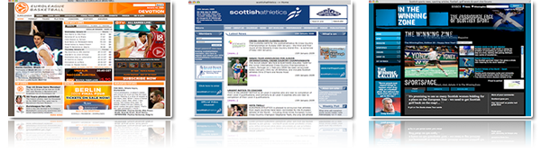
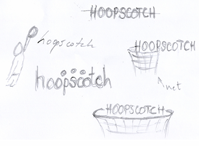
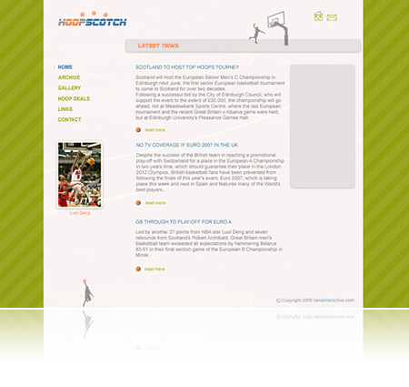
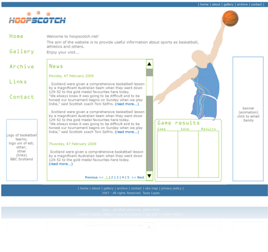
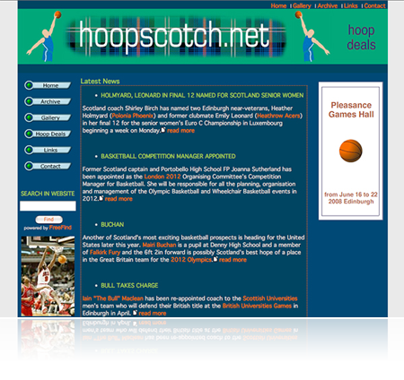
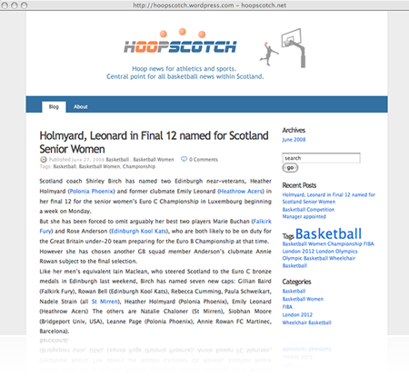

Critique of Design Process: Relationship Designer/ Client
In this assignment I will demonstrate and illustrate the relationship between Designer and Client during the design process of a web site. I have chosen this subject as I am passionate about web design and want to demonstrate how client input and motivations can influence the design process and finished web site. Three years ago when I started my HND at Edinburgh’s Telford College, an opportunity arose which would start my career as a web designer. I was commissioned to design and produce a basketball website for a sports journalist. It was my job not only to ensure the web site would look appealing, but would also transmit its message.
My first step was to plan a strategy for the design. This is a very important task as it ensures the design of the web site will communicate the right message. The strategy consisted of an interview with the client, a questionnaire and background research into competitors. Interviews and questionnaires are tools for the designer to gain essential information from the client regarding the web site’s purpose and objectives, and also for the client to express creative ideas. The designer must identify and understand the key messages, functions and style of the web site. An example of the questionnaire can be viewed here.
In my first interview with the client, it was made clear that name of the web site should be hoopscotch and the purpose was to provide information about sport news, mainly basketball. Other topics talked in the interview were related with target audience and its characteristics, also the site content and design requirements.
Based on the client’s questionnaire, there were two main points identified as to how the client wanted the web site to be perceived. First, the web site should be professional, and second, the site should be eye-catching. In addition, we reviewed some key points that best described the tone of the web site and discussed a variety of contrasting tones: casual or formal, energetic or relaxing. With the client’s agreement, I decided that the tone should be a combination of fresh and friendly, yet professional. Combining a variety of adjectives and striking the right balance is the one of the challenges I most enjoy about web design.
Once the client completed the questionnaire, my next step was to research hoopscotch competitors.My goal was to understand what message their competitors conveyed through their visuals, and the colours and symbols they used to identify their web sites. This helped me to decide how I was going to differentiate hoopscotch, and create visuals that would be unique and memorable.

Image 1 - Competitors
The results of my research showed that many of the basketball web sites, especially the professional ones, were very corporate looking. My first impression was that whilst their topics were based around specific basketball teams, the tone they employed was conservative and predictable making the various sites samey. It became clear that to differentiate hoopscotch, I needed to show as being updated with current news about basketball in general, which fit with the fresh and friendly tone we identified in the questionnaire.
Following this research I went to meet the client once again and communicated the results of our meeting, my research results and my recommendations. Providing this information is vital in building client’s trust and clarifying design decisions. From this point we both had the same vision of what we were trying to accomplish.
Identity and Colour
With a defined direction to focus on, I worked on the concept of the logo and colour palette. I started by creating a few sketches showing some ideas, which I then scanned and sent to the client.

Image 2 - Sketches for logo
Some of the logos created were based on the blue and white colours of the Scottish flag and the orange of the basketball. The client replied by requesting that in addition the Sutherland tartan and its colour palette was to be included in the logo. I understood the idea but it was a little bit unsettling initially as in the first meeting the client had not suggested this idea.
Eventually we agreed in using the Sutherland tartan (image of tartan) as colour palette and using the basketball within the logo.
The typeface chosen for the logo matched the typeface used in sport news programmes, reflecting the web site identity, and carrying a stylish and professional feel that matched the design strategy.
After some amendments in the digital stage, I had a well balanced logo that worked well when combined with the full name of the web site.
Image 3 - Final logo
Whilst improving the digital version of the logo, I began to explore the tartan’s colour palette. I decided on using an orange/red energetic colour and complimented it with a more traditional green. This would give hoopscotch a fresh look, while the blue balanced it and keep it energetic.
With a solid strategy in place, the colour palettes picked, and the identity created, the website was about to be born. As this was my first experience as a web designer and my brain was bursting with ideas, it was time to express my design ideas so decided to create a draft layout and send it to the client, thinking that he would be surprised by my quick yet professional response.

Image 4 - First draft
This draft was declined by the client who was unhappy with the look and expressed a preference for darker tones. This rejection brought into question my understanding of the client’s approach and also my assumption that the client was aware of what the general feel of the website would be when completed.
From a design perspective, I advised the client that darker tones would bring a weight to the design and would not transmit the friendly, energetic tone as discussed in our first meetings. I felt the colours that the client suggested were too strong and solid. After some experimenting, I resolved this by using a richer blue to contrast more with the orange colour.
At this stage the client suggested for me to work with him on a regular basis and for us to work together in creating and developing the web site. As this was my first professional web design job, I agreed to this suggestion thinking this could be an opportunity to better grasp the client’s expectations on a face to face basis.
During the next meeting, the client requested an area for the game final results to be displayed, which wasn’t part of his initial requirements. I decided to locate it aside from the main messaging area with the intention of guiding the user’s eye through it.

Image 5 - Second draft
After spending time with the client, I felt this project was far away from initial concepts and equally far from completion. On a daily basis, the client introduced different views and ideas for his web site. I began to question my design skills but felt that the client perhaps had a different agenda to my own and was using this professional relationship and daily contact to establish a more social relationship.

Image 6 - Final draft
Mission Completed?
Overall, I wasn’t pleased with the results of all the work I did for hoopscotch and felt that my first job as a web designer had not been altogether positive. At the beginning, my design was unique and fresh, especially when compared with competitors. This differentiation would enable the client to build a solid presence in his readers’ minds.
The final product, however, left me feeling unhappy with the direction of the identity and look of the website. I realised that although the client would be receiving the website he wanted, this would require continual updating and maintenance, the responsibility of which would fall to me.
After two years of continual updates, I suggested to the client that a good alternative would be to sign up for a blog, which meant the client could update and maintain his own blog in his own time. Knowing the client had limited IT skills, I suggested wordpress.com blog as it is very simple and straight forward to use. The client agreed to this with the condition that I help him to set up and design the blog. At this time I had recently started my degree at Napier University and was excited by the idea of re-designing this long lost web site with better developed design skills and more experience under my belt. I felt more confident in my abilities, not only in design but in my client-designer working relationships.
I re-designed hoopscotch using elements chosen from the initial sketches of this project. This time I could explain to him, based on my Experiential Design classes, how design is perceived in the eye of the user.

Image 7 - hoopscotch's blog
Finally, I am happy with the re-design of the project and pleased it has run its course and reached completion. However, I continue to receive regular emails from the client to help him through every situation he encounters on the blog, which professionally I do.
There have been many lessons learned throughout this project. I have learnt the value of planning and organising duties that I need to perform throughout the design process. Equally important is a pre-determined timescale to help prevent the prolonged design process which I encountered. Without this, I had difficulties moving forward with the project, adding to my frustrations and perhaps impacting on the final product. Communication was another key part of my experience. I saw that good communication keeps the project moving forward although it is necessary to have a fixed goal and purpose from the client, albeit with reasonable flexibility dependant on timescale.
Throughout the process, my trust in the client unfortunately waned but this taught me to be more aware of the importance of establishing clear expectations and a more professional relationship with the client. We had to rely on one another to complete a task and in the right manner. The scrutiny that an increased level of face to face client contact brought, resulted in a decrease in my efficiency, motivation and production on this project. The client, not being from a design background, did not have insight into the design process and evolution of ideas. His feedback, at times when it perhaps was not necessary, hindered the progress of the project.
One thing for sure, my experience was a steep learning curve and lessons learnt could not be replaced by any classroom. In my Experiential Design classes I’ve learnt to be a better designer. From my mistakes I’ve learnt how to deal with some odd situations with the client and therefore how to become a better professional. Design often depends on individual taste and designing a website that the client will like from the first draft is virtually impossible. The real challenge is evolving ideas on par with the client in an efficient and professional way whilst maintaining one’s own design integrity.